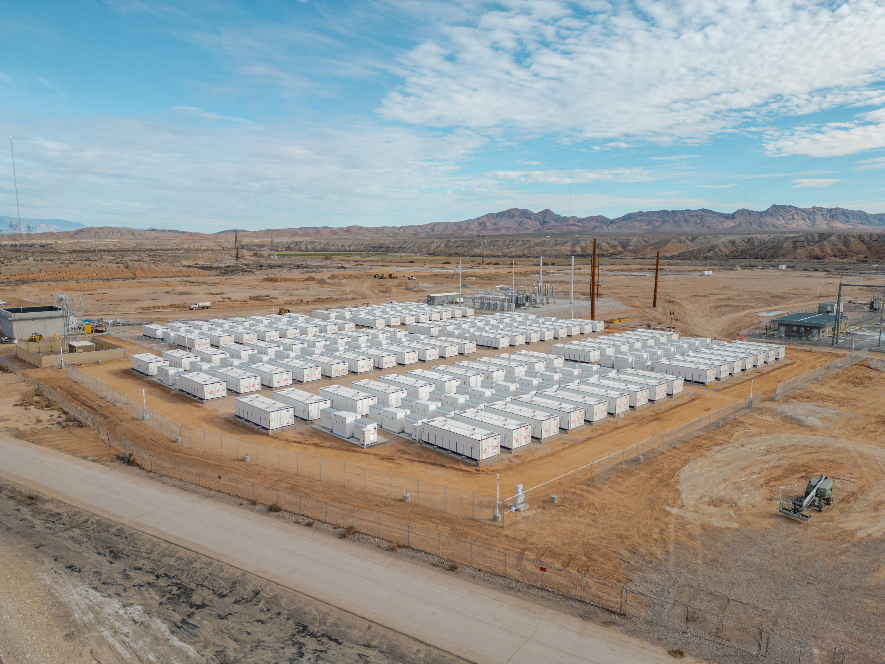

Understand capacity
Bring together operating history, capacity tests, and degradation assumptions to assess how usable energy could change.
Degradation & duration outlook

CAPACITY PLANNING FOR GRID-SCALE STORAGE
Battery capacity.
Better planned.
Connect battery degradation, site constraints, and project economics to decide when and how to augment.
Explore the pilot01 / THE CHALLENGE
Nameplate capacity is a starting point. It isn't a lifetime plan.
As batteries age, usable energy changes. That affects discharge duration, contract commitments, and the timing of your next capital decision.
We're developing a planning approach that connects the battery's operating history with the realities of the site and the economics of augmentation.
02 / THE DECISIONS THAT MATTER
Bring together operating history, capacity tests, and degradation assumptions to assess how usable energy could change.
Degradation & duration outlook
Evaluate low-voltage and medium-voltage augmentation against physical space, electrical limits, controls, and warranty constraints.
LV / MV / no-action comparison
Connect timing, cost, outage assumptions, and potential capacity recovery so engineering and finance can assess the same decision.
An investment decision memo
03 / FROM EVIDENCE TO ACTION
Start with the data you have. Make the assumptions visible. Test the options that matter.
Site configuration, operating history, capacity tests, and warranty terms.
Capacity trajectories, augmentation timing, site feasibility, and commercial sensitivities.
A comparison of options, key uncertainties, and the next engineering questions to resolve.
04 / START WITH ONE ASSET
A focused starting point for a consequential investment.
We're speaking with owners and developers of grid-scale storage about an initial pilot focused on one operating asset or late-stage project.
Discuss your projectPROPOSED PILOT SCOPE
05 / GROUNDED IN THE ASSET
Founded on practical experience in battery degradation, augmentation strategy, and technical modeling.
Nathan Tidball brings an energy storage and chemical engineering background to the challenge of connecting battery behavior with long-term asset decisions.
Augment Wh's initial focus is capacity and augmentation planning, with a longer-term vision for lifecycle intelligence across battery storage assets.
Meet Nathan on LinkedInA FEW PRACTICAL QUESTIONS
Augment Wh is in development. We're exploring pilot projects and refining the initial capacity and augmentation planning workflow with potential customers.
The proposed pilot is an analysis and planning engagement. It does not issue dispatch commands or replace your energy management system, plant controller, or engineering approval process.
The first discussion is about available records and the decision you need to make. Data gaps, assumptions, and uncertainty help define the scope before a pilot begins.
LET'S TALK CAPACITY
Bring a capacity question, an augmentation decision,
or a challenge in your current planning process.